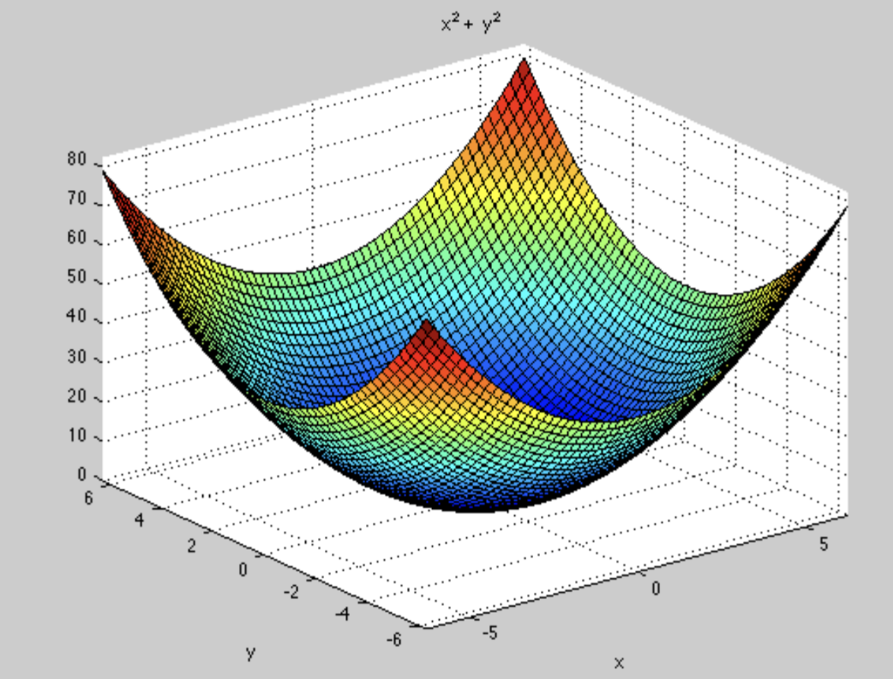
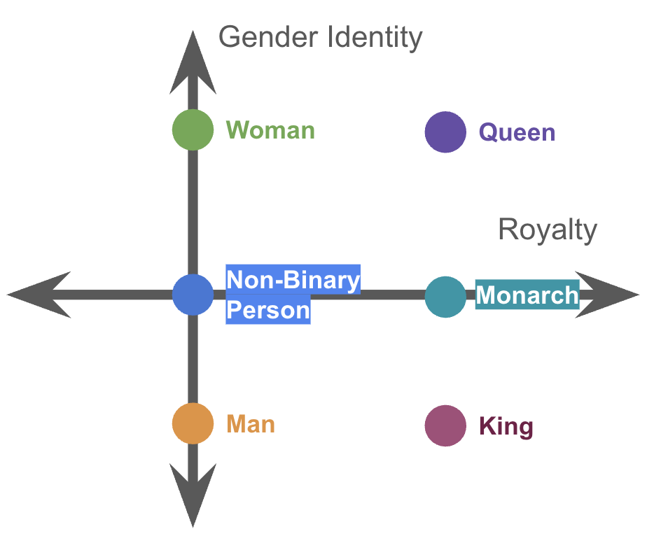
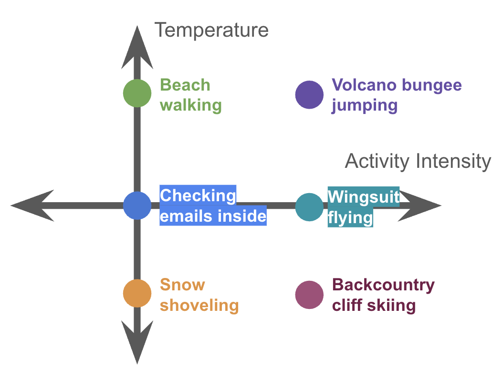
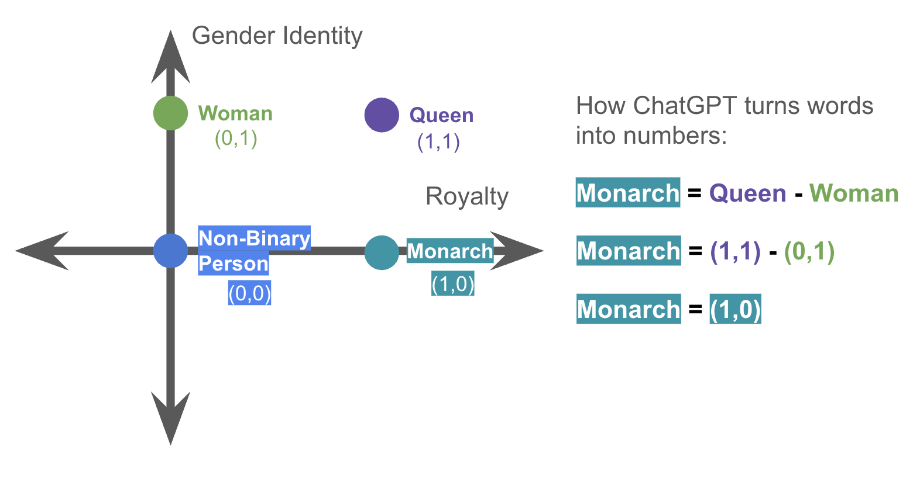
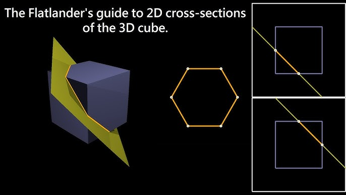
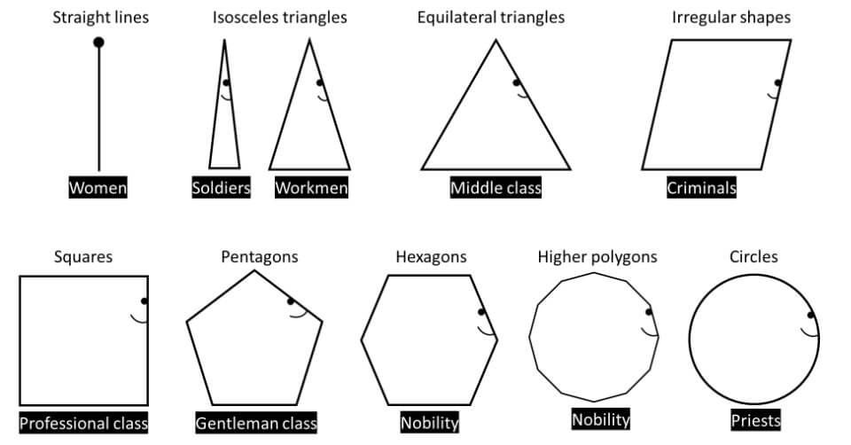

Start with slopes and curves. Follow small steps downhill, then see how the same idea helps train AI.
Write your answer, then choose Check answer for feedback. Short formulas are checked mathematically. Written feedback identifies key ideas and suggests what to add; open the example to compare your reasoning. Press Enter in a short-answer field, or Ctrl/⌘ + Enter in a written response.
Click and drag to rotate the paraboloid!
Drag to orbit the valley. The person stays visible as you compare the terrain from different angles.
Yes! The world is messy and we can't just plug stuff into equations. As we have a bunch of data, we can't rely on the quadratic formula, completing the square, etc. I mean it would be insane to solve quartic equations by hand with this nightmare formula:
So what in the world do we do? We use computers!

At each point, we can calculate the slope at that point and use it to decide which downhill step to take.
Spoiler for Q10: Computers can think like someone standing at the edge of a paraboloid, and make small steps downward until it knows the slope is flat. Remember that line we drew through the vertex of the parabola from Q4? Computers can figure that out, but in 3D too.
In Algebra II mode, we can say the slope is flat when the secant plane has no incline, like a perfectly level sheet across the bowl.
Computers really just make a bunch of educated guesses until it gets close enough to the result we want: the lowest point of the paraboloid.
This is the concept of Gradient Descent, a foundational reason why ChatGPT works!!
You just learned the concept of Stochastic Gradient Descent! You can now connect slopes, small updates, and prediction errors to training AI!
Stochastic is a fancy word for random.
In actual SGD, the computer selects a random group of training examples and uses their prediction errors to estimate a downhill direction. Different groups can suggest different steps; more randomness does not guarantee a better answer.
Some shakiness is good, but too much causes the marbles to fall out, so we need just the right amount.
The moving marbles illustrate wandering and settling. With a fixed dataset and error measure, fitting moves a candidate across a fixed error surface. The shaping bowl later is a visual story about learning patterns. Temperature is different: it matters later, when ChatGPT is actually writing its response.
Instead of marbles in weird bowl holes, instead picture the depth of the hole as reducing pollution, saving resources, etc.
You think that’s crazy? It’s about to get nuts.





P.S.: What we talked about today is exactly why TikTok and Instagram Reels are so addicting and the Oxford Word of the Year is “Rage Bait”. The “marbles at the bottom of the bowl” for social media have to do with watch time, comments, and shares. Outrage and dishonesty is more effective at this than positivity and the full truth.
One last note: examples like walking down a hill blindfolded, shaping a bowl, and dropping marbles into a bowl are analogies. They are not a perfect representation of how AI works, but they help get the general ideas across.
Thank you so much for listening and participating!!
Fictional arcade. Real statistics.
Scoop up space snacks, dodge asteroids, and rack up points! Twelve players have tried our fictional arcade game. Each recorded their number of warm-up rounds and a score from one challenge round. Their scorecards are below.
The arcade’s little robot, Byte, wants to guess a typical score. Its first guess? 60 points. Your mission: teach it to use the scorecards, improve its guesses, and eventually predict scores using practice rounds.
Read a few scorecards → update the guess → try again
You need averages, plots, and simple algebra. Our invented scores show an association with practice; they do not prove that practice caused the difference. Previous gaming experience could matter too.
| Player | Practice rounds | Arcade score |
|---|---|---|
| Astro | 0 | 62 |
| Bloop | 1 | 68 |
| Comet | 2 | 60 |
| Doodle | 3 | 72 |
| Echo | 4 | 70 |
| Fizz | 5 | 78 |
| Gizmo | 6 | 74 |
| Hex | 7 | 84 |
| Iggy | 8 | 82 |
| Jinx | 9 | 80 |
| Koko | 10 | 90 |
| Luma | 11 | 92 |
Byte needs a sensible score target. Ignore practice rounds for a moment: what is the sample mean of the 12 arcade scores? The three number checks accept answers within 0.05 point.
The scores add to 912. Divide by 12 players to get a sample mean of 76 points. A different group of players might have a different sample mean.
Byte predicts everyone will score 70. Iggy scored 82. What is that player's residual, observed score minus predicted score?
The residual is 82 − 70 = 12 points. Squaring a residual makes misses on either side count as positive error. The computer will try to make the average squared residual smaller.
Byte starts with a guess of 60 points and picks Jinx’s scorecard: 80 points. Move one quarter of the way from 60 toward 80. What is the new estimate?
new estimate = old estimate + step fraction × (selected score − old estimate)
60 + 0.25 × (80 − 60) = 65. The 25% step fraction is called a learning rate. It controls how far the estimate moves on each update.
A step based on all 12 scores points toward their average of 76. A step based on one randomly selected score points toward that score instead. Why might two single-score steps point in different directions?
Astro, Iggy, and Jinx earned different scores. The data stay fixed, but the row chosen for an update can change. That random choice is the stochastic part of stochastic gradient descent (SGD). We are not adding arbitrary shaking to the graph.
Predict which will look smoother: using 1 score per step or all 12. Then try both. Each step selects real rows from the table above and updates the estimate toward their average.
Take a step to see which players were selected.
Starting estimate: 60 points. The full-sample mean is 76.
The curve shows average squared error across all 12 scores. A random mini-batch step can sometimes make that full-data error rise before later steps bring it down.
All 12 scores produce the same direction every time, so their path is smoother. Smaller random groups are cheaper to inspect per step, but their estimates bounce around because the selected scores vary. More randomness does not guarantee a better answer.
Did a few warm-up rounds help players get the hang of Meteor Munch? Use the practice-round column and move the line until its predictions seem close to the points. Each vertical segment is a residual: actual score minus predicted score. What do the line's starting height and slope tell you?
The computer adjusts the line's height and tilt using the selected players' prediction errors. You do not need to calculate those two adjustments by hand. The dashed reference line, when shown, is the best-fitting line for these 12 players.
The starting height predicts the score at zero practice rounds. The slope says how many points the line predicts for one additional practice round. It describes an association in this sample, not proof that extra practice rounds caused the score difference.
First, repeat a short run with the same 12 scores but different randomly chosen rows. Then draw new groups of 12 from a fictional larger arcade crowd. Which result changes because the computer's steps changed, and which changes because the data changed?
With the same data, short runs can end at different estimates because the computer chooses different rows. With a new group of players, the sample mean itself may change. Optimizer variation is not a confidence interval or a measure of uncertainty about the whole population.
Byte’s predictions have settled down. Is it ready to predict scores for everyone at the arcade? Explain where SGD’s randomness came from and what you would check before trusting the bot.
SGD chose different players' rows to estimate a direction for each step. A stable fit only tells us the calculation has settled for this data. We still need to ask whether a line fits the pattern, whether the sample represents the larger group, and whether another explanation could account for the association.
You have already used prediction errors to improve an estimate. Now picture that same idea as a marble moving through a bowl, and follow it into the familiar word and AI animations.
The error curve in Question 5 was a bowl seen from the side. For the fitted line, we can move in two directions: change its starting height or change its slope. Imagine a bowl whose height measures the error for each possible line.
| In the picture | In our arcade-score model |
|---|---|
| A marble's position | One candidate line, with a particular starting height and slope |
| Height above the bottom | How much prediction error that line makes |
| A small move downhill | An update aimed at reducing prediction error |
| The bottom | The best-fit reference for the data we have |
This animated bowl illustrates a more complicated error landscape, with several dents. Our sample-mean and straight-line problems each have one best solution. Their bowls stay fixed while we change the estimate. In real SGD, varying directions come from randomly selected rows, as you saw in Question 5.
Try little shaking, then lots. What does a marble that keeps bouncing remind you of in our small-batch estimator? Does a bouncy path prove the final answer is more accurate?
The marble represents a candidate fit, and its height represents prediction error. Bouncing resembles the varying updates made from different small groups. More movement does not guarantee a better estimate. Our actual simulator calculates steps from selected players; the shaking slider here controls the physical analogy.
Our arcade scorecards represented each person using numbers: practice rounds and arcade score. AI language models also work with numerical representations, including lists of numbers called vectors. This playful diagram uses a few made-up features to show how words can be placed near words with related features.
These axes and word positions are invented for the illustration. Changing the lens or scanner changes what you see; it does not train a model. Actual language models learn many numerical features rather than using this small hand-labeled map.
Change the lens and move the scanner. Why might two numbers be too few to describe all the patterns in language?
Two numbers were enough to record our arcade example. Language has many patterns, such as meanings, context, and relationships among words. More numerical features let a model represent more of those patterns. We can draw a few directions on screen even when the model uses many more.
Think back to the line slowly fitting our scatterplot. A language model also makes predictions, measures its misses, and updates its learned numbers. Watch the words move into place and the bowl take shape: both pictures tell the story of learning patterns from examples.
The shaping bowl is a visual story about a model becoming organized through learning. In our actual fixed-data error plot, training moves the estimate across a fixed surface. The moving words and changing bowl are illustrations, not calculations from the 12 players.
What plays the role of arcade-score prediction error when a language model is learning to predict the next piece of text?
The model assigns probabilities to possible next pieces of text. Training compares those predictions with what actually followed in the example, then adjusts the learned numbers. It uses a different error measure from our squared arcade-score errors, but the idea of predicting, measuring error, and updating carries over.
Once a model is trained, it can use what it learned to make a new prediction. In this animation, the model assigns probabilities to possible next words. Temperature changes how concentrated those choices are. Predict what will happen to the probability bars when you turn it up, then try it.
The bars show probabilities for this toy word example. Lower temperature concentrates the choices; higher temperature spreads them out. The moving marbles illustrate that variety. Choosing an output does not refit our arcade-score line or train the language model again.
Our line and a language model both learn by using prediction errors to update numbers. During SGD training, randomness comes from choosing examples for an update. During output generation, randomness can come from sampling a possible next piece of text. Temperature affects those output probabilities; it is not our learning rate or batch size. A fluent output, like a stable fitted line, still needs checking.
Surprise guest Nova hits a jackpot score of 100 points. Would the sample mean rise or fall? How might an unusually high score affect the fitted line? Then try a 125% step in Question 5. Does every step reduce the full-data error?
The mean rises from 76 to about 77.85 because 100 is above the current mean. A high score can pull a fitted line, especially if that player’s number of practice rounds is far from the others. A 125% step can overshoot the selected-group average; it does not guarantee a smaller error across all 12 scores.
Arts night is coming. Your team gets one hour to run a pop-up café. Byte, your enthusiastic robot intern, suggests: “Charge $100 a cup. Problem solved.” You suspect Byte needs a better model.
Your mission: choose a price that earns money for the event, keeps the café welcoming, and avoids a mountain of leftovers. Build a model, test its predictions, then pitch your plan.
Work in pairs: one person is the model builder, the other is the skeptical event organizer. Swap jobs halfway through. All events, prices, and data below are fictional—not school records.
A model is a useful simplification. Our cycle: ask → assume → build → test → revise → decide. No calculus needed. Allow about 50–60 minutes; save the bonus missions for later.
Your written responses stay in this browser when storage is available.“Make the most money” leaves a lot out. What decision must your team make? Name one success measure and one assumption you would need to check.
Choose a price per cup. Profit per hour is one success measure; affordable prices, manageable queues, and little waste also matter. Assume comparable attendance, cup sizes, service time, and weather. Those assumptions need evidence. The mathematically highest profit may not be your team's best decision.
Start with two hypothetical planning estimates: at $3 per cup, 64 cups/hour; at $6 per cup, 28 cups/hour. Let p be price in dollars per cup and q be expected demand in cups per hour. Try a line: q = a + bp.
64 = a + 3b and 28 = a + 6b
Subtract the equations. What is b? Explain what its sign means before checking.
28 − 64 = (6 − 3)b, so b = −12. Then 64 = a − 36 gives a = 100. Our first model is q = 100 − 12p: each extra dollar predicts 12 fewer cups per hour. “100 cups at a $0 price” is an extrapolation, not a fact we measured. Use this model only in the $3–$6 range until you have more evidence.
The team now runs seven fictional one-hour pilots. These are the observations we will fit. They differ from the two planning estimates. Each pilot uses the same cup size; for this exercise assume the pilots could serve every interested buyer.
| Pilot | Price ($/cup) | Sold (cups/hour) | Used in last step? |
|---|
At $4.50, our first model predicts 46 cups/hour; the pilot sold 48. What is the residual (observed − predicted)?
48 − 46 = +2 cups/hour. The model underpredicted. We compare candidate lines using the average of the squared residuals across all seven pilots. Squaring stops positive and negative misses from canceling. A small error on these pilots still does not establish that price caused the sales difference.
Move the line by hand first. Then predict: will steps using one pilot look smoother or noisier than steps using all seven? Run both. Every update below is calculated from the highlighted pilots.
A batch is a fresh random group of distinct pilots. Different groups can suggest different steps; a step can increase the error across all seven pilots. A constant step fraction can keep a small-batch fit fluctuating. This page scales price internally so height and tilt can use sensible step fractions.
All seven pilots give the same full-data direction for a given line. Smaller groups use fewer observations per update but introduce variation. The least-squares reference is q = 100 − 12p, with average squared error about 3.14 (cups/hour)². It can also be found directly; this example makes iterative fitting visible. SGD means stochastic gradient descent: random groups supply estimates of the downhill direction. Arbitrary shaking is not its update rule.
For this calculation, use q = 100 − 12p. At $5, expect 40 cups/hour. Each cup costs $1.25 to supply, and the event has $30 in fixed costs per hour.
revenue = price × cups sold
cost = fixed cost + cost per cup × cups sold
profit = revenue − cost
What is the expected profit for this hour? Byte counted the entire revenue as profit. Show where Byte went wrong.
Revenue is 5 × 40 = $200. Cost is 30 + 1.25 × 40 = $80. Profit is $120. Expected demand can be fractional because it is a prediction of an average rate, not a claim that we can sell part of a cup.
Your team can serve only 40 cups/hour. What happens if demand is higher? This planner uses your current fitted line from Question 4. Try doubling capacity, changing costs, and moving the price. Does “sell more” always mean “earn more”?
cups sold = smaller of expected demand and capacity
π = (p − cost per cup) × cups sold − fixed cost
With q = 100 − 12p and 40-cup capacity, solve 100 − 12p = 40 to find p = $5. Lower prices fill capacity but earn less per cup; higher prices lose enough sales to reduce profit here. The best price on our 25¢ grid is $5 with $120 expected profit. Without a capacity limit, multiplying price and linear demand gives a quadratic profit model with a vertex near $4.79. Constraints can change the answer. These recommendations depend on our chosen goal and assumptions.
A smooth fitted line is not the finish line. These three new observations were held out of fitting. Predict how a rainy-day crowd could affect the model, then reveal the checks. Should Byte keep fitting the old pilots, or collect new evidence?
| Price ($/cup) | Observed (cups/hour) | Predicted (cups/hour) | Residual (cups/hour) |
|---|
The reference line's average squared error is 2 on the similar day but about 262.33 (cups/hour)² on the rainy day. Repeating SGD on the same old pilots will not fix a missing crowd or weather assumption. Collect relevant data and consider a revised model. Pilot sales below serving capacity would hide unmet demand; we assumed that did not happen in our training data.
Write a four-sentence recommendation: your price; predicted profit with units and capacity; a tradeoff or assumption; and what you would check next. Your partner should challenge one claim. Would a reusable-cup option or a lower price change your goal?
With the reference fit and default costs, recommend $5 per cup for about $120 profit over one hour, assuming 40-cup serving capacity and demand like the pilots. A lower price might be more welcoming; reusable cups could change costs and waste. Check attendance, staffing, and weather before buying supplies. A recommendation can reasonably prioritize access or sustainability over maximum profit.
The two numbers a and b locate a candidate demand model. Imagine the bowl's height is its prediction error: lower means a better fit. Each batch of café pilots suggests a small move.
This shared bowl has several dents to illustrate more complicated optimization. Our fixed-data, squared-error line fit has one best-fit solution and a fixed error surface. Fitting moves the candidate across that surface. The shaking slider is an illustration; the actual random-pilot updates are in Question 4. The price-planning curve is a separate decision model.
What corresponds to the marble, its height, and one step in our café example? Why doesn't reaching the bottom prove the rainy-day predictions will work?
The marble is a candidate pair (a, b); height is the average squared prediction error on the training pilots; a step updates a and b using selected pilots. The bottom gives the best fit to this dataset and model family. It does not validate our assumptions, new-day predictions, or final price recommendation.
Our model turns numbers into predictions. Language models also use numerical features, but far more than our price and demand. Explore these invented word features, watch the learning story, then change output temperature.
These word positions and axes are invented for the illustration. Moving the scanner changes the view; it does not fit our café model.
The moving words and shaping bowl tell a visual story about learning patterns. Our real café fitting calculations move coefficients over a fixed error surface. Language models use a different prediction-error measure.
Temperature changes the toy model's next-word probabilities after training. It is different from the step fraction or the number of pilots in an SGD update.
Both fitting processes use prediction errors to adjust learned numbers. Selecting a price uses the fitted demand model plus costs, capacity, and goals; it does not refit the line. AI output temperature changes how concentrated possible outputs are; it does not train the model again. Predictions, recommendations, and fluent AI outputs all need evidence and judgment.
Promotion: a fictional post starts with 30 views and gains 25% per hour. Model views as V(t) = 30(1.25)t. How many views does it predict after three hours? What makes this growth assumption fail eventually? Views are not buyers.
Poster photo: the top of a café banner is 2.4 m above a camera, and the camera is 1.8 m horizontally from it. What angle of elevation frames the top? Sketch the right triangle and use degree mode.
V(3) = 30(1.25)³ = 58.59375 ≈ 58.6 views. A limited audience and slowing shares make indefinite exponential growth unrealistic. For the photo, tan θ = 2.4/1.8, so θ = tan⁻¹(2.4/1.8) ≈ 53.1°. The straight-line distance is 3 m. Measurements and the right-angle assumption affect accuracy.
Designed for an Introduction to Mathematical Modeling class, grades 11–12, with Integrated III preparation. This is one guest lesson, not a semester curriculum. Use pairs and pause for predictions before pressing Run. Calculators are enough; coefficient-update derivations are optional teacher background.
50-minute route: mission and systems (Q1–3), 12 min; fitting (Q4), 8 min; profit, constraints, and validation (Q5–7), 15 min; partner pitch (Q8), 5 min; bowl and AI discussion (Q9–10), 10 min. For a shorter visit, demonstrate the AI widgets rather than exploring each lens. Bonus missions are follow-up work. Confirm pacing in a classroom walkthrough.
Answer key: slope −12; intercept 100; residual +2; Q5 profit $120. OLS reference q = 100 − 12p; pilot MSE = 22/7 ≈ 3.14. Default 40-cup capacity and costs give $5 on the 25¢ grid and $120 expected profit. Similar-day reference MSE = 2; rainy-day MSE ≈ 262.33. Bonus: 58.6 views and 53.1°.
Listen for: revenue versus profit; demand versus capacity-limited sales; interpolating versus extrapolating; fitting versus validating versus deciding; SGD batch randomness versus changes in the real world; output temperature versus training controls. Price–sales association in these fictional observational pilots does not prove causation.
Numerical background: updates minimize half the average squared error in centered, scaled price coordinates. The displayed coefficients use original price units. The least-squares line has a unique minimum here. Fresh uniform subsets are sampled independently per update, without repeated rows inside a batch. Compare both updates and pilot observations processed. With a constant learning rate, small batches need not settle exactly at the reference.
Career connections: event planning, business analysis, environmental choices about waste, and communicating a recommendation to a community. Ask whether fixed costs, unpaid labor, affordable access, or reusable supplies would change the decision. Extension themes add digital promotion, exponential functions, and right-triangle trigonometry for a photo composition.
We live in three spatial dimensions. Mathematics can go further. Borrow the eyes of a Flatlander, slice through an invisible world, and turn a cube in a direction your hands cannot point.
Eight interactive stops. Move the sliders, drag the diagrams, and follow the analogies. These are mathematical spaces and projections—not a claim that we can travel through extra physical dimensions.
A slice reveals a section. A shadow forgets information. A net opens a boundary. Coordinates keep track of the whole object—even when a drawing cannot.
That is useful in AI, too: a model can work with hundreds of features without drawing a hundred-dimensional room. Geometry follows the coordinates; our pictures are carefully chosen windows.
Want to keep exploring? Tesseracts · Hyperspheres · Hypercube counts from Wolfram MathWorld.
I hold a Bachelor and Master of Science in Computer Science from Colorado School of Mines. People say I have "golden retriever energy", and I love being physically active. I am an avid weightlifter, trail cyclist, snowboarder, runner, and more. I moved back to Santa Fe to work a remote position as an AI Research Engineer. I was a member of the Alpha Tau Omega fraternity as Philanthropy Chair, and I lived in the frat house basement for two years (at the expense of my GPA). I also love to sing, write, and enjoy long conversations with friends and family.